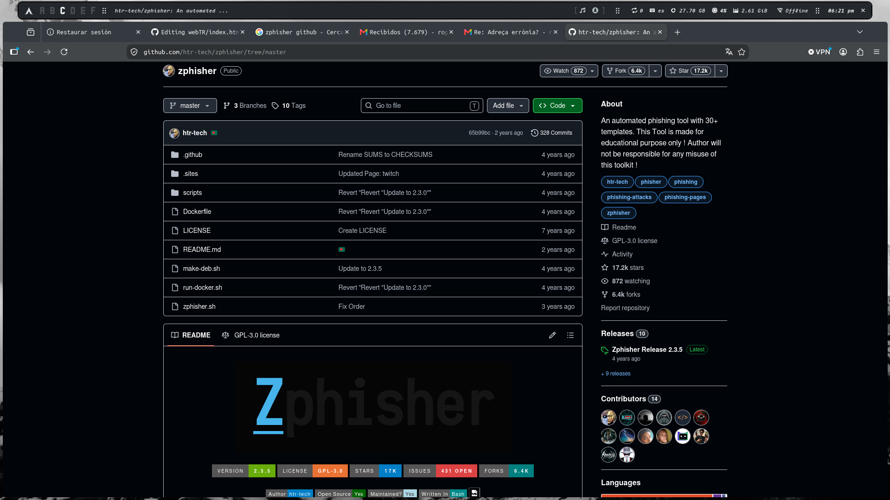
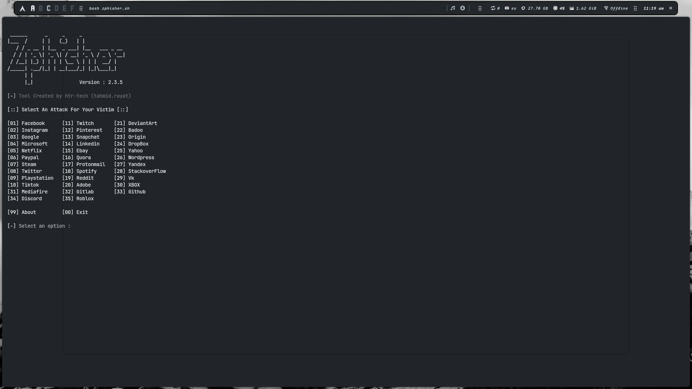
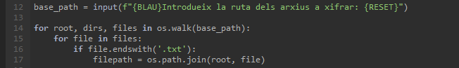
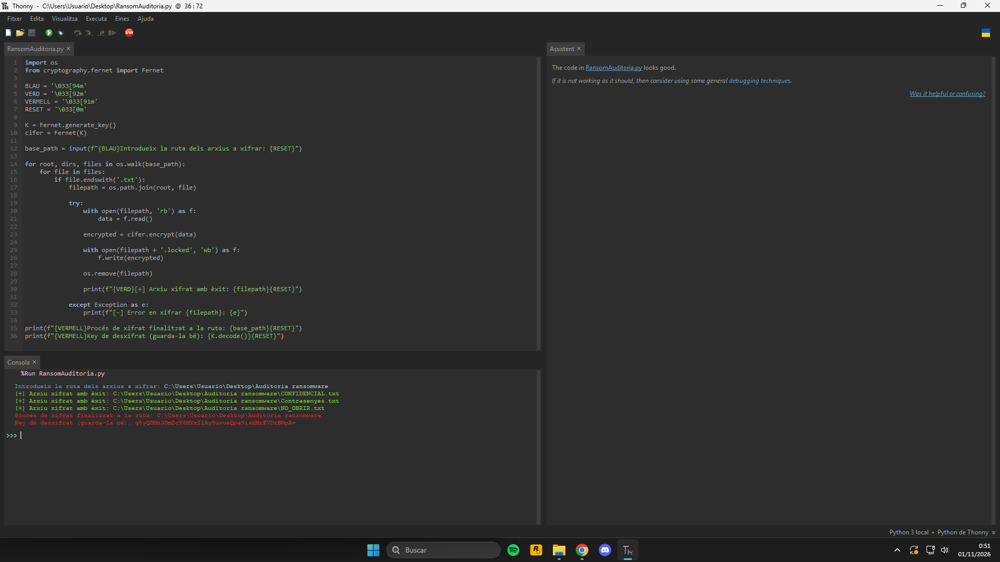
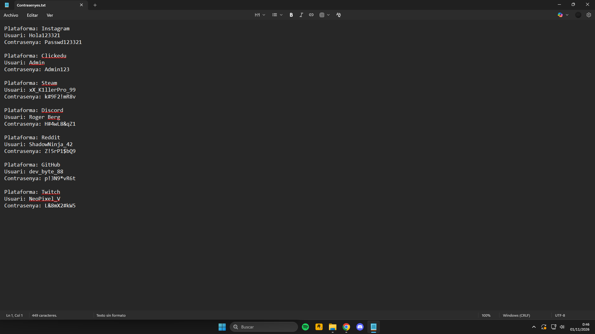
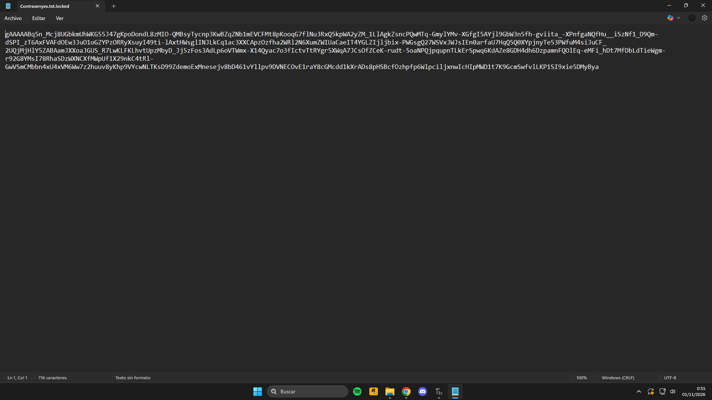

Benvingut/da
Sóc en Roger, estudiant de 2n de batxillerat. Aquí trobaràs un resum de la part pràctica del meu treball de recerca.
La motivació darrere d'aquest treball és el meu interès pel món de la programació i la ciberseguretat, concretament el "pentesting".
La part pràctica d'aquest treball està dividida en diferents auditories.
Fes servir les pestanyes de dalt per a navegar.
Què vaig fer?
Abans de començar el treball de recerca vaig estar utilitzant diverses distribucions de Linux en mode "live boot". Les meves primeres distribucions van ser Kali i Parrot, les quals tenen un gran renom en el món de la ciberseguretat, però finalment vaig decidir instal·lar Arch com a sistema operatiu natiu a un ordinador.
Una vegada començat el treball, vaig fer una extensa recerca sobre diferents vulnerabilitats i malwares per a analitzar en el meu propi equip d'una forma controlada.
En realitzar les proves en els meus dispositius personals, la meva màxima prioritat era conèixer l'abast de les eines utilitzades, ja que no podia posar en perill el meu ordinador personal.
Vaig fer probes amb apk's malicioses, les quals permetien un cert control sobre el dispositiu infectat arribant a geolocalitzar-lo entre altres coses. També vaig fer probes amb pdf's maliciosos els quals aprofitaven una vulnerabilitat d'una versió antiga d'adobe acrobat reader, però la versió que tenia al meu equip personal era massa nova i em va servir per comprovar que la vulnerabilitat havia estat arreglada fa temps. Ambdues probes les vaig realitzar amb una eina anomenada metasploit, que serveix per generar i executar exploits.
Posteriorment vaig fer probes amb l'eina de phishing i els scripts que vaig programar en python per a les diferents auditories.
Phishing
El phishing és un tipus de ciberatac amb moltes variants. Totes elles tenen el mateix vector d'atac: l'enginyeria social.
Aquest tipus de ciberatac es pot realitzar mitjançant correu electrònic, SMS... L'objectiu de l'atacant sol ser induir l'usuari mitjançant manipulacions a entrar dins d'un enllaç, descarregar arxius...
Aquesta auditoria va ser l'espina central del meu TR, ja que tant la introducció dels arxius a la màquina víctima com la inducció a l'usuari perquè proporcionés les seves credencials les vaig fer mitjançant phishing per correu electrònic.
L'exemple més clar de phishing, però, és el del panell d'inici de sessió. És per això que vaig fer una recerca d'eines que em permetessin fer aquest tipus d'auditories d'una forma fàcil. Gràcies a aquesta recerca vaig trobar l'eina Zphisher.

Aquesta eina permet desplegar temporalment una pàgina web que imiti el panell d'inici de sessió de diferents pàgines web bancàries, de xarxes socials... L'objectiu principal d'aquesta eina és la recol·lecció de credencials, però, a més d'això, l'eina també és capaç d'agafar l'adreça IPv4 de l'usuari, cosa que permet la geolocalització de la màquina víctima si aquesta s'introdueix a qualsevol pàgina web com "IP Tracker".

Reverse shell
Per a aquesta auditoria vaig infectar el meu equip personal amb una reverse shell. Aquesta va estar programada exclusivament en Python i per a programar-la em vaig basar en un vídeo d'"S4vitar", però una vegada acabada vaig pensar en possibles modificacions pel programa. En aquell moment se'm va ocórrer la idea de fer que, a part d'enviar una connexió a la màquina atacant, el programa recavés informació de l'equip infectat com ara el SO, la versió d'aquest, l'arquitectura del processador...
Durant l'auditoria em vaig trobar amb diversos problemes, entre els quals hi havia l'antivirus de Windows i la limitació que pateix i patia el programa per a operar fora de xarxes locals.
La infecció era bastant senzilla: una vegada l'usuari obria el programari maliciós, l'arxiu enviava una connexió cap a la màquina atacant, l'adreça IP de la qual estava hardcoded. Una vegada establerta la connexió, l'equip enviava a la màquina atacant la informació esmentada al paràgraf anterior i obria una consola cmd en segon pla la qual podia ser controlada amb màxims privilegis per la màquina atacant.
Ransomware
Aquesta auditoria va consistir en una infecció al meu propi equip mitjançant una versió educativa d'un ransomware la qual apuntava a una ruta concreta i una extensió d'arxiu específica. Es van prendre tals mesures de seguretat ja que la màquina víctima era el meu propi ordinador.

Els objectius d'aquesta auditoria van ser els següents:
- Comprovar la dificultat de la creació d'un ransomware
- Analitzar l'impacte d'un ransomware
- Analitzar algun sistema de protecció contra ransomware i altres tipus de malware
Una vegada executat l'arxiu, en ser una versió educativa que no pretenia ser una còpia exacta d'un ransomware real, l'arxiu demanava mitjançant un input de tipus string la ruta absoluta dels arxius a encriptar.
En introduir la ruta absoluta dels arxius a encriptar, l'arxiu procedia a crear nous arxius amb el contingut dels antics encriptat, eliminava els arxius originals i, seguidament, proporcionava la key per consola per a poder revertir el procés posteriorment.

Abans de realitzar l'auditoria vaig preparar l'entorn amb la carpeta objectiu i diversos arxius amb extensió ".txt" en els quals hi havia contrasenyes (falses) i altres continguts suposadament privats.

Finalment, en acabar tot el procés, quedava l'arxiu ".txt.locked", el qual contenia una cadena de caràcters il·legible degut al xifrat simètric "fernet".

OSINT personal(part de prova)
Per a la part d'OSINT la tècnica que més vaig utilitzar va ser "google dorks". Aquesta tècnica consisteix en fer cerques de la manera que es mostra a continuació per a acotar els resultats al que es vol trobar. Mitjançant aquesta tècnica vaig aconseguir trobar dades del meu germà, ja que buscant el meu nom complet, els 2 cognoms coincideixen amb els seus.
Què recomano
- Contrasenyes
- Utilitzar contrasenyes robustes
- Canviar cada cert temps les teves contrasenyes
- Utilitzar gestors de contrasenyes. (EL DE GOOGLE NO!)
- Activar el 2FA
- Mail i serveis de missatgeria
- Desconfiar d'ofertes que semblin massa bones.
- Desconfiar dels missatges amb un tó molt alarmant.
- Verificar si l'adreça del correu electrònic o telèfon del remitent és l'oficial de l'empresa que diu ser.
- En cas d'entrar a un link, cal verificar que sigui oficial.